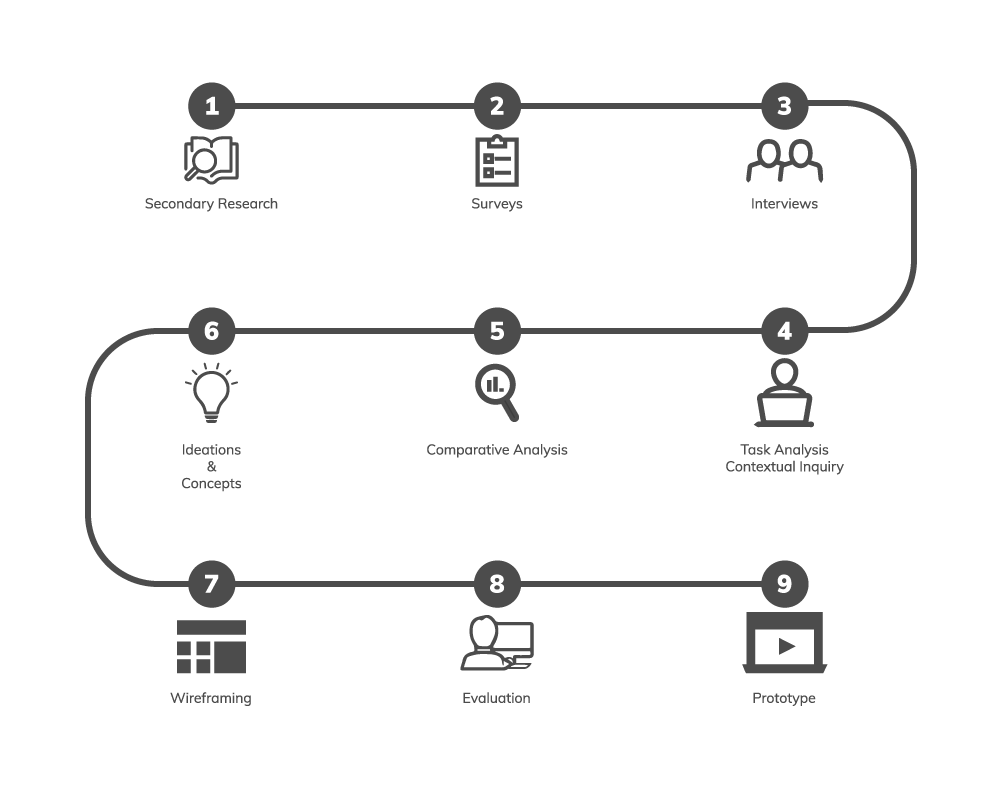
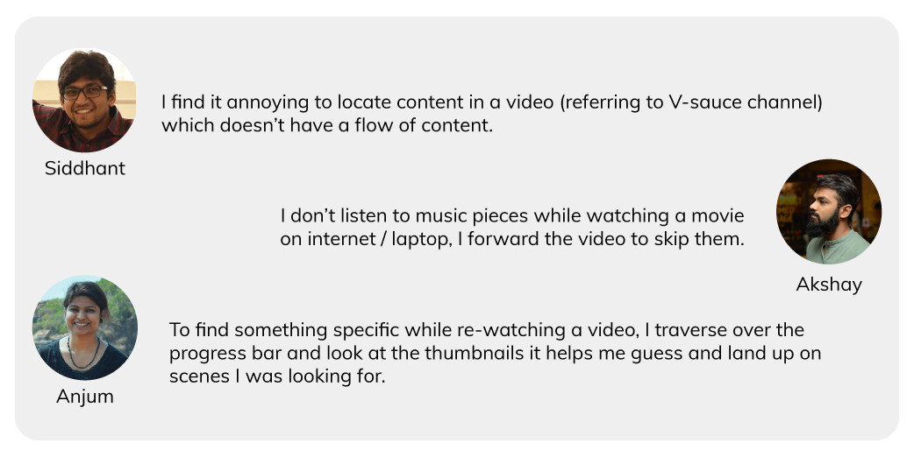
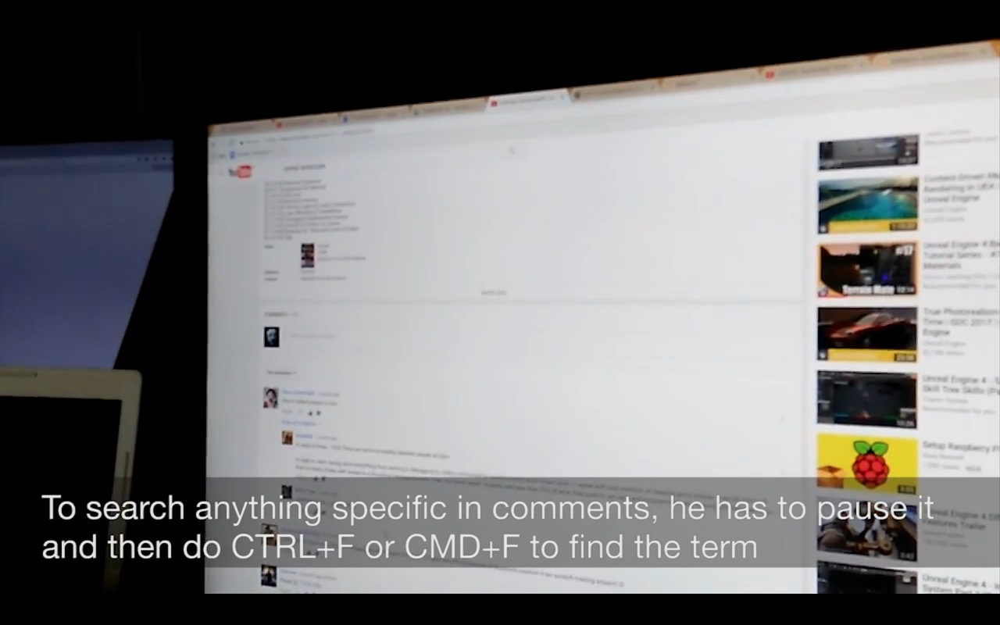
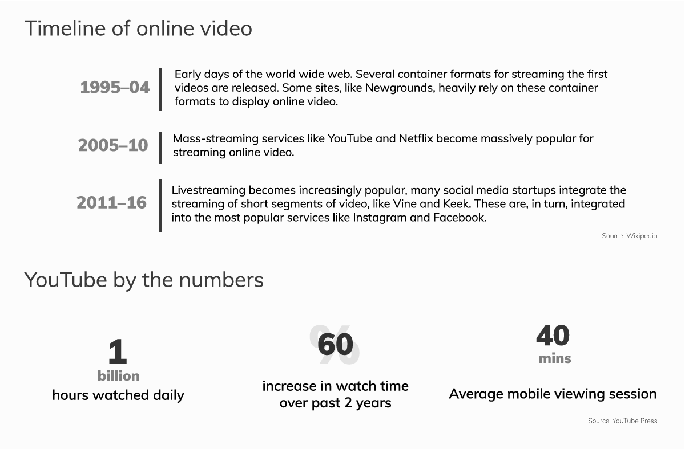
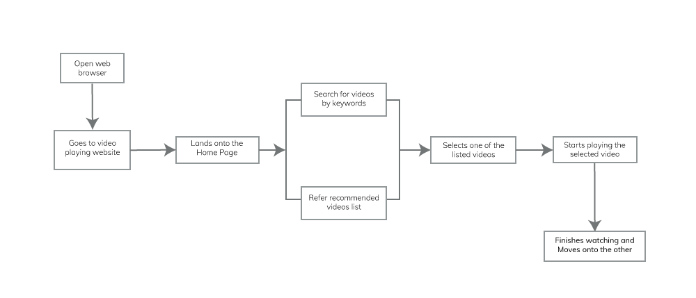
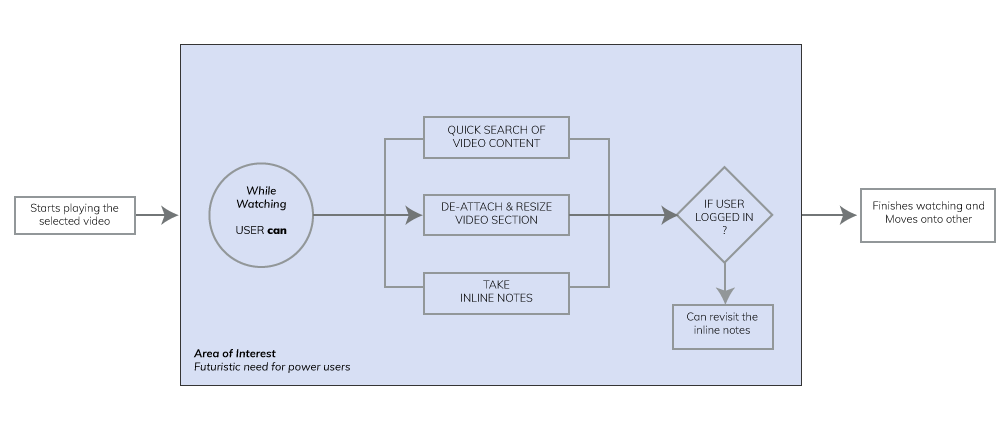

Enhance user experience of watching video online
The problem
Since 2005 onwards, with the surge in online video sharing websites like myspace, youtube and others; users have started to consume information manyfolds. As a result, online videos has now become an open access to information, a powerful force for education, building understanding, and documenting the world events.
But the interactions and use cases of how the users interacts with an online video is still very rudimentary.
Design Process
Research
This project came into existence to evaluate that hypothesis i.e. "current day interactions of online videos are very limited". So, I started off with mapping all the possible types of videos and their mode of applications.
Mapping: Video Viewing Experiences & Capabilities.
Online Survey
In order to evaluate the problem area, an online survey was conducted where the audiences were from different walks of life i.e. (students, IT engineers, Managers, Teachers) and casual users of online videos.

Overall there were 29 participants who filled the survey.
Interviews
Firmly beleiving in the design philosophy of talking to people, in order to identify thier problems, to understand and distinguish their needs from the wants. I started conversing with people around me about how they go about watching videos online.
Quotes from the personal interviews.
Contextual Inquiry
As well established fact in user research, i.e. what users says is not what exactly they need. I made use of the contextual inquiry research method to better understand their behavior while wathcing online videos to achieve their goals.
Note:- Transcribed video of contextual inquiries.
Comparative Analysis - Existing Online Video Sites
A comparative study was done to analyse how various other online video sites currently functions, and understand the nuances of their interfaces which helped me discover the features set that is currently available for the users to interact with.
Note: Documented video showing the comparative study of interfaces of 4 different video sites i.e. Youtube, Daily Motion, Ted and Vimeo.
Understanding the Research Data
Primary Research

Secondary Research
User Task Flow
Based on the task analysis, it was observed that there is a limited set of user touch points while interacting with the online video players. The diagram below represents the existing user task flow on video streaming websites (e.g. YouTube, Vimeo, TED etc.).
Key Observations
- Title’s doesn't justify the content in the video
- Users played the video at 1.5x or 2x speed to go through the video quickly while looking for something important
- Hassle of toggling between browser and software for hands on training while watching video
- User’s (going through the video for the first time) doesn't know what content to expect and when
- Users wanted quick lookup in comments section while watching, a few of them used CMD+F (mac) or CTRL+F (windows) to search
- User’s wants to save the URL if they found it useful and might use it for future reference
- “Feedback coming from the horses mouth”, materials referred by experts are more trustworthy than any other materials
All these studies pointed out that there is an opportunity area to intervene in designing better user experiences for the users while they are watching an online video.
Research Insights
Based on the user research study, I observed that users faced underlying frustration whenever they were looking forward to
search content inside an online video
discover quality content on websites like YouTube
bookmark interesting video snippets
rate a video content quality; (many of them didn't like or dislike videos )
Design Explorations
Design Considerations
Since there are billions of users with YouTube and given the art-of-the-state infrastructure it has, we can assume that the proposed design solution could be used as a case study for other similar websites.
Prototyping & Evaluating
I implemented few of the concept sketches into clickable wireframe mockup using Balsamiq, and got it reviewed by fellow designer classmates.
Version 1.0
- Evaluation:
- Users find it difficult to locate new menu icon
- Placement of the smart search icon on the right top corner of the player confused users;
- Users were not sure whether the content in the overlay screen is scrollable or not
- All the new controls alongside the existing control buttons added more clutter
Taking cues from the version 1.0 mockup evaluations, it made sense to keep a common interaction point for the new features set, similar to how settings button is currently available now. But at the same time it should be visible to the user and quickly accessible to use as a one touch solution.
Version 2.0
- Evaluation:
- 70% participants found the idea of searching inside the video and adding tags interesting
- An observation made by a user, what happens to new button in full-screen mode?
- Is this approach scalable to all other existing video streaming websites?
- What will happen if video doesn’t have any dialogues in it? Only musical or visual.
Proposed Design Solution
Key Takeaways
- While compiling the complete project for the portfolio, I realised how important it is to always click pictures to document the whole process. It not only helps you to show your process but also keeps a tab on why certain critical decisions made as project progresses.
- During reviews, of Balsamiq clickable mockup, I had to constantly remind the reviewers that its a mockup.
- As I did not know much about the web development, I am currently in the process learning the technical aspects of web development.